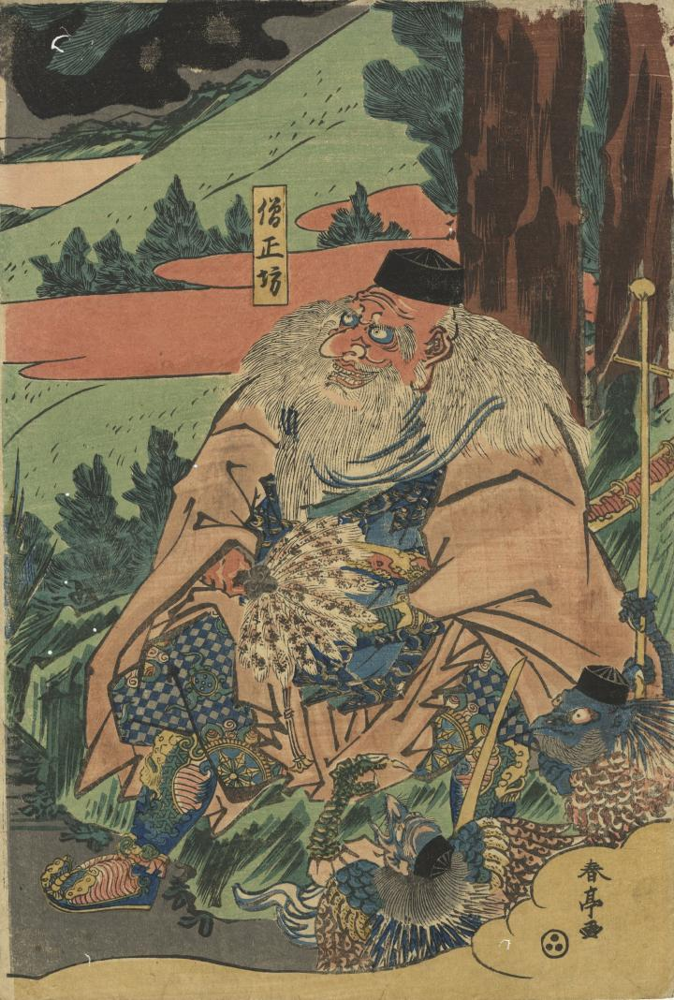

鞍馬の大天狗僧正坊が座っている。周囲に２体の天狗がいる。
著作者：春亭／出典：親書誌：U426_nichibunken_0403：牛若丸と僧正坊；ウシワカマル ト ソウジョウボウ／日付：2015／資源識別子：U426_nichibunken_0403_0001_0000
Copyright (c)2010- International Research Center for Japanese Studies, Kyoto, Japan. All rights reserved.